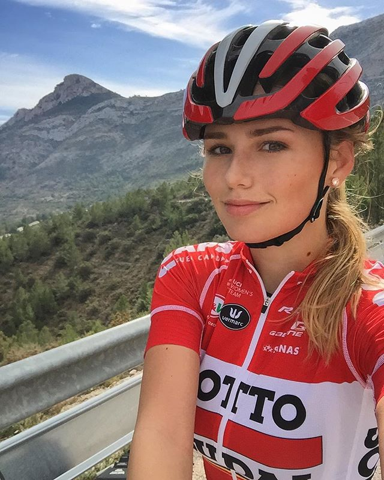

Rapport d'expérience sur l'Expéremorque !

Puck Moonen (cycliste à la lotto soudal)
"Une remorque agréable dans les montagnes"
Puck Moonen est notre première ambassadrice de la marque Expéremorque. Lorsque nous l'avons rencontré, elle a adoré notre projet. Durant l'hiver, cette cycliste professionnelle passionnée, accrochait sa remorque pour se lester en y mettant 30 à 40 kg en son sein. Elle l'a trouvé très résistante, car avec elle faisait des sorties d'une centaine de kilomètres.
"J'ai beaucoup apprécié rouler avec la remorque, elle est vraiment parfaite pour une utilisation fréquente. De plus, l'Experemorque ne prend pas énormément de place dans mon garage. c'est un atout supplémentaire si vous hésitez entre plusieurs modèles."
Nous remercions Puck pour son interet porté à notre produit. Vous pourrez la retrouver sur le Tour du Limousin féminin le 20 mai prochain. Pour peut-être jouer la victoire !